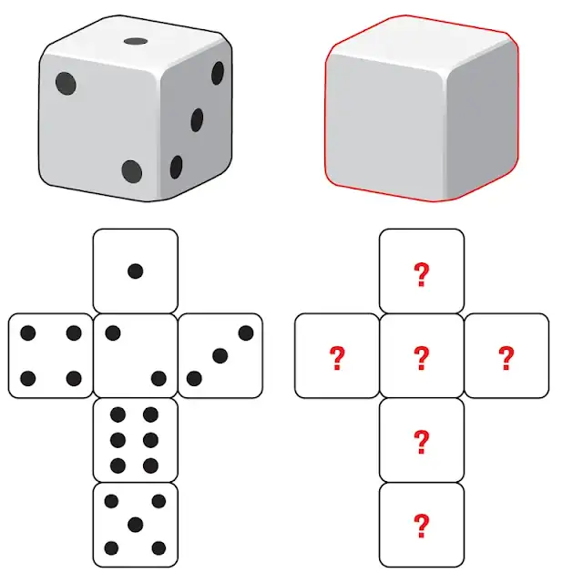

16 ToDo Probability 1
 Ալավերդի, լուսանկարի հղումը, Հեղինակ՝ Tigran Hambardzumyan
Ալավերդի, լուսանկարի հղումը, Հեղինակ՝ Tigran Hambardzumyan
📚 Նյութը
🏡 Տնային
- ❗❗❗ DON’T CHECK THE SOLUTIONS BEFORE TRYING TO DO THE HOMEWORK BY YOURSELF❗❗❗
- Please don’t hesitate to ask questions, never forget about the 🍊karalyok🍊 principle!
- The harder the problem is, the more 🧀cheeses🧀 it has.
- Problems with 🎁 are just extra bonuses. It would be good to try to solve them, but also it’s not the highest priority task.
- If the problem involve many boring calculations, feel free to skip them - important part is understanding the concepts.
- Submit your solutions here (even if it’s unfinished)
Problems by Subtopic
Basics & Discrete Probability
01 Two Dice Probability
Suppose we roll two fair dice. What is the probability of getting:
- 2 on each of them
- at least one 1
- exactly one 1
- one 1 and one 4
- 1 on the first die and 4 on the second die
02 Coin Tosses - Odd Heads
A fair coin is tossed 5 times. What is the probability of getting an odd number of heads?
Can you do the exercise without much computations?
03 Queen or Heart
A standard deck of 52 playing cards is shuffled. What is the probability of drawing either a queen or a heart?
04 An Urn
An urn contains 3 red balls and 5 blue balls. Two balls are drawn without replacement. What is the probability that both balls are red?
05 Colored Pencils
There are 2 red, 5 blue and 6 yellow pencils (total: 13). Two pencils are drawn randomly. Find the probability that both are:
- red
- of the same color
- of different colors
- not yellow
- not green
06 Reading Books
There are 15 books: 5 in Armenian, 10 in French. Ruben cannot read French. If he randomly takes 3 books, what is the probability that he can read at least one?
07 Baby-Mother Matching
Three babies are given a weekly health check at a clinic, and then returned randomly to their mothers. What is the probability that at least one baby goes to the right mother?
08 Ruined Photos on Film
After a trip to Garni-Geghard, you bring your camera film to a photography shop. Unfortunately, the shop ruins 4 consecutive photos in a row from your roll of 24 photos of Garni. What is the probability that the ruined photos included the
- eighth or ninth or tenth photos,
- eighth and ninth and tenth photos
on the roll?
Geometric Probability (Էս թեման կարաք բաց թողեք մինչև հաջորդ մինի-դասը)
09 Dart Throwing
A dart is thrown at a circular target with concentric circles. Circle 1 (innermost) has radius 1m, and each subsequent radius increases by 1m. Find the probability that the dart lands in:
- circle 1
- a red circle
- a yellow circle

10 Computing Pi
What is the probability that a randomly chosen point inside a square of side length 2 falls within the inscribed circle of radius 1?
11 Meeting at Kinopark
Anush and Nairi are shopping at the mall. They agree to split up for a time and then meet for lunch. They plan to meet in front of Kinopark between 12:00 and 13:00. The one who arrives first agrees to wait 15 minutes for the other to arrive. After 15 minutes, that person will leave and continue shopping. What is the probability that they will meet if each one of them arrives at any time between 12:00 and 13:00?
Hint: Represent on the coordinate plane with x = Anush’s arrival, y = Nairi’s arrival.
Conditional & Bayes
12 Spam Filter and “Lottery”
A spam filter tags emails as spam or not spam. Based on historical data:
- 80% of spam emails contain the word “lottery”.
- 30% of non-spam emails contain the word “lottery”.
- 40% of emails are spam.
What is the probability that an email containing the word “lottery” is spam?
13 Flowers Survival and Neighbor Reliability
You ask your neighbor to water your flowers while you are on vacation. If the flowers are watered, they have about 0.85 chance of survival; otherwise, they will only survive with probability 0.2. You are 90 percent sure your neighbor will water the flowers, but when you are back, you see the flowers didn’t survive. What is the probability your neighbor didn’t water the flowers? Should you trust her anymore?
14 Commute Modes and Lateness
Nune uses her car 30% of the time, walks 30% of the time, and rides the bus 40% of the time to work. She is late 10% of the time when she walks, 3% of the time when she drives, and 7% of the time when she takes the bus.
- Yesterday she was late. What is the probability she took the bus?
- Today she was on time. Do you think she walked?
15 Two-Headed Coin Bayes
Rosie has ten coins. Nine of them are ordinary coins with equal chances of Heads and Tails when tossed, and the tenth has two Heads.
- If she takes one of the coins at random from her pocket, what is the probability that it is the coin with two Heads?
- If she tosses the coin and it comes up Heads, what is the probability that it is the coin with two Heads?
- If she tosses the coin one further time and it comes up Tails, what is the probability that it is one of the nine ordinary coins? ### 16 Medical Test (Bayes’ Theorem) {data-difficulty=“2”}
A disease affects 1 in 1,000 people (0.1%). A test has: true positive rate 99% (if diseased), false positive rate 5% (if healthy). If a person tests positive, what is the probability they actually have the disease?
17 Two Children: Conditional Probabilities
Consider a family that has two children. The sample space of genders is S = {(G,G), (G,B), (B,G), (B,B)} where G denotes a girl and B a boy, and all outcomes are equally likely.
- What is the probability that both children are girls, given that the first child is a girl?
- Suppose the father answers “Yes” to “Do you have at least one daughter?”. Given this information, what is the probability that both children are girls?
18 Two Children, One Named Lilia
A family has two children. We ask the father: “Do you have at least one daughter named Lilia?”, and he replies “Yes.” What is the probability that both children are girls?
Assume:
- If a child is a girl, her name is Lilia with probability \(\\alpha < 1\), independently of other children’s names.
- If the child is a boy, his name will not be Lilia.
Հավեսոտ
19 Bertrand’s Paradox - Random Chords in Circles
Consider two concentric circles with radii 1 and 2. A chord is drawn randomly in the larger circle. What is the probability that this chord intersects the smaller circle?
📹 Video Solution in Armenian (Շուտ եմ ասել մինչև երկար չմտածեք ինքնուրույն վիդեոն նայել չկա !)
20 Three-Person Duel - Optimal Strategy
Three people (A, B, C) participate in a duel with the following shooting accuracies:
- A hits with probability 0.3
- B hits with probability 1 (never misses)
- C hits with probability 0.5
They shoot in order \(A \\to B \\to C \\to A \\to \\cdots\) until only one survives. What is A’s optimal strategy?
📹 Video Solution in Armenian (Շուտ եմ ասել մինչև երկար չմտածեք ինքնուրույն վիդեոն նայել չկա !)
21 Shakespeare’s Monkeys - Infinite Monkey Theorem
A monkey sits at a typewriter and randomly presses keys. The typewriter has 26 letters (a-z), space, and period (28 total keys). What is the probability that the monkey will eventually type all the works of Shakespeare (given infinite time)?
📹 Video Solution in Armenian (Շուտ եմ ասել մինչև երկար չմտածեք ինքնուրույն վիդեոն նայել չկա !)
22 Զառեր
Ունենք երկու զառ, որոնցից մեկը՝ սովորական, 1-6 թվերով, իսկ մյուսը՝ դատարկ, առանց թվերի։ Ի՞նչ թվեր գրենք 2-րդ զառի վրա, որպեսզի երկու զառերը միաժամանակ նետելիս դրանց թվերի գումարի հնարավոր արժեքները լինեն 1, 2, 3, 4, 5, 6, 7, 8, 9, 10, 11, 12
ընդ որում՝ բոլորը հավասար հավանականությամբ։

Distributions & Moments (Սա հետոյվա)
23 Modified Die: Probability and Moments
Vahe added a dot on the 4 side of the die, making it 5, and then added two dots on the 1 side, making it 3. What is the probability that the outcome of the die is greater than 4? Find the expectation and variance of the die.
24 Die Game: Expected Value
You roll a fair die. If you roll 1, you are paid $25. If you roll 2, you are paid $5. If you roll 3, you win nothing. If you roll 4 or 5, you must pay $10, and if you roll 6, you must pay $15. Do you want to play?
25 PDF 2x on [0,1]: Moments
Let X be a random variable with the PDF
f(x) = { 2x for \(0 \\le x \\le 1\); 0 otherwise }.
Find the expectation and variance of
- X,
- 2X,
- 2X + 7.
26 PMF and CDF for Two Coin Flips
A fair coin is tossed twice. Let X be the number of observed heads.
- Find the PMF of X.
- Find the CDF of X.
- Plot the PMF and the CDF.
27 Exponential PDF and CDF
Let X be a continuous random variable with PDF
f_X(x) = { c e^{-x}, \(x \\ge 0\); 0, otherwise }, where c > 0.
- Find the value of c.
- Find the CDF F_X(x).
- Find P(1 < X < 3).
28 Uniform(a,b) Moments
Let \(X \\sim \\mathrm{Uniform}(a,b)\).
- Find E[X].
- Find Var(X).
29 Uniform Sum Expectation
Let X and Y be two continuous random variables with uniform distribution on (0, 2). Find the expectation of X + Y.
30 Find Normalizing Constant
Let X be a random variable with PDF
f_X(x) = { a x^5 for \(0 \\le x \\le 3\); 0 otherwise }.
Find the value of the constant a.
🎲 xx+37 (xx)
- ▶️ToDo
- 🔗Random link ToDo
- 🇦🇲🎶ToDo
- 🌐🎶ToDo
- 🤌Կարգին ToDo